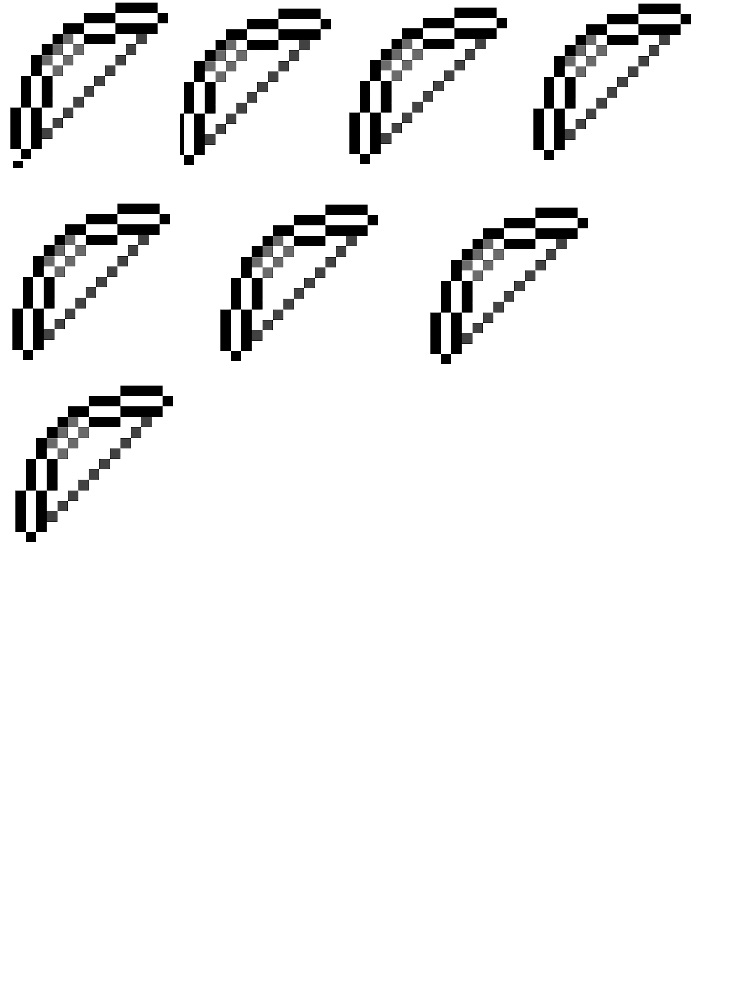
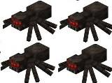
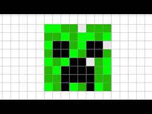
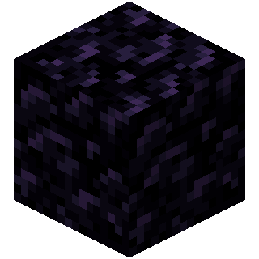
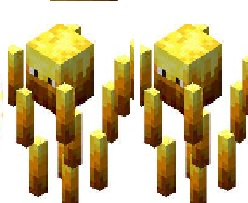
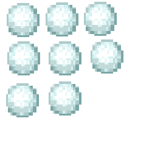
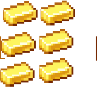
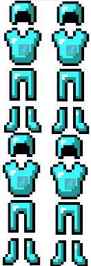
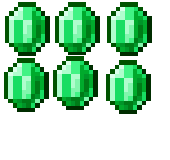
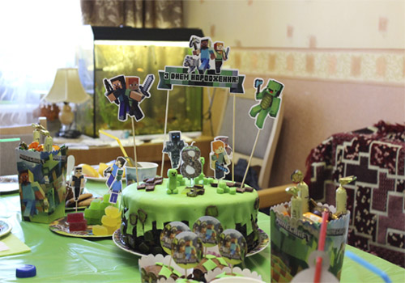

Хочу поделиться квестом для дня рождения мальчика. Я не один раз проводила квесты для своих детей, но всегда новогодние. А этот квест – дебют, в том смысле, что придуман полностью мной и плюс был проведен среди приглашенных детей. А это на порядок сложнее: своих детей и их интересы я знаю, а увлечь чужого ребенка, чтобы ему тоже было интересно, не так просто. В своих квестах я обычно использую материалы и наработки, кот. есть в свободном доступе в интернете. Поэтому этот квест мое ответное «мерси»: может кому-то пригодится)).
>День рождения младшего сына пришелся на очередной локдаун. ТРЦ закрыли, а планы были большие: друзья заранее приглашены, квест в кафе выбран и почти заказан. Пришлось срочно спасать настроение именинника, поэтому был обещан квест по мотивам «Майнкрафт», кот. проведем дома. С темой я практически не была знакома (в игру ни разу не играла), имела только общее представление, о чем речь. Поискала в интернете квесты с подобной тематикой и ничего не нашла. Точнее не нашла того, что бы мне понравилось. Решила сочинить сама, взяв за основу саму игру. Интернет и спец.сайты по игре в помощь). Что-то я упростила: в игре, чтобы скрафтить предметы пропорции не всегда 1:1. У нас сыновьями даже были споры, можно так или нельзя)). Но сошлись на том, что это наш мир Майнкрафт, поэтому как создатели можем делать все и как захотим). Основные моменты, вроде бы, были выдержаны: в игре действительно, чтобы получить тот или иной ресурс или попасть в определенную локацию, нужно проделать те действия, что описаны в квесте. В любом случае: я художник, я так вижу).
>Выкладываю свой сценарий в таком виде, в каком писала для себя. С пояснениями по ходу действия. Писала достаточно подробно, чтобы самой не запутаться, т.к. много специфических терминов. Название персонажей игры выделила жирным шрифтом, ресурсы – курсивом. Все ресурсы – распечатанные картинки из интернета. Для удобства печати комплектовала каждый ресурс по несколько штук на одном листе, потом разрезала на прямоугольники. Приложу в материалах для печати.
>1. Знакомство
>Сегодня мы празднуем день рождения нашего….(имя). Приглашаю вас провести его в мире Майнкрафт. Все учасники получают отличительный знак игрока (Были куплены медальки в тему. Как вариант, можно значки). А нашему имениннику вручим еще корону (тоже была куплена готовая корона именинника с картинкой Майнкрафт).
>А вы играете в Майнкрафт? (предположительно дети должны ответить положительно? ). Тогда, как у любого опытного игрока у вас в инвентаре должны быть основные предметы. Давайте решим, что должно быть (слушаем варианты детей). Предлагаю каждому выбрать, какие предметы есть у него и нарисовать их (раздать листочки в клеточку по 5-7шт. Карандаши, фломастеры, маркеры. В основном нужны черный, серый, коричневый цвета. Я делила тетрадный лист на 4 части).
>P.S. В ходе обсуждения направить мысли детей, что нарисовать надо следующие предметы:
- доски
- топор
- кирка
- палка
- меч железный.

>Все нарисовали? Молодцы! Предлагаю хранить общий инвентарь в этой коробочке (коробка с картинкой Майнкрафт), а вот еще каждому по конверту для лично заработанного инвентаря (на обычных белых конвертах распечатала картинку Майнкрафт и подписала имена).
>Перед началом квеста мы должны создать верстак. Для этого нам нужны будут доски и топоры (каждый из участников отдает ведущему доски и топор по 1 шт.), Вот ваш верстак (у меня был небольшой деревянный ящичек, который выполнил роль верстака. Подойдет, я думаю, любая коробка).
>2. Цель нашей сегодняшней игры – победить Дракона Края и получить драконье яйцо. И, для начала, нам нужны луки.

Палки у вас есть, Что еще нужно добыть? (слушаем ответы). Правильно, нить. Все запаслись топором или мечом, чтобы убить (мне слово «убить» к контексте детской игры не очень нравится, но в игре именно «убивают». Я старалась употреблять слово «победить») Паука (из пауков выпадают нити для лука).

>Задание: найти в детской комнате и победить паука (ответить на вопрос).
>Пояснение: распечатать картинки паука из Манкрафт (по количеству детей), сзади напечатать(написать) вопрос и расклеить их по комнате. Я клеила на малярную ленту: легко отрывается и не оставляет следов. Тот, кто правильно отвечает на вопрос, получает нить (распечатанная картинка) – 1шт.
Примеры вопросов:
- что, кроме нити, выпадает при убийстве паука? (паучий глаз)
- как ведут себя пауки днем? (пассивны)
- какие виды пауков ты знаешь? (пещерный и обычный)
- кто может быть наездником на пауке? (скелеты)
- чем отличается пещерный паук от обычного? (если укусит, отравит игрока; немного меньше размером)
- что является лекарством от яда паука? (молоко)
- можно ли укрыться от паука на стене? (нет, они умеют забираться на стену)
- чем нужно уничтожить паутину, чтобы получить нить? (мечом)
>Молодцы! Нить добыли. Можно крафтить лук. (все кладут по 1 нити и 1 палке в верстак, взамен получают от ведущего лук).
>Но мечи и топоры затупились. Давайте их отремонтируем. (Нужно положить мечи и топоры в верстак – кто чем воевал с пауками. При ремонте 2 предмета меняются на один. Т.е. у игроков теперь мечей-топоров в 2 раза меньше. Мечи-топоры кладем в общий инвентарь, а луки - каждый в свой персональный конверт).
3. О, мы вовремя получили луки. Нас атакуют Криперы.

Они атакуют с двух сторон, поэтому делимся на две команды (для разделения на команды, как вариант, в мешочек положить черные и белые шашки по количеству игроков).
>Наша задача издалека попасть в Криперов, чтобы они к нам не приблизились. Игроки команды, которая первая победит своего Крипера, получают по одному дополнительному ресурсу.
>Пояснение: каждому игроку выдать по 3 шарика. Я эти шарики сделала из бумаги: просто смяла в комок лист бумаги. Есть шарики для настольного тенниса – отлично. А в принципе, по желанию и возможности. Кидание шариков в Крипера изображает стрельбу из лука.
>Картинку Крипера распечатала на листе А4, вырезала и прикрепила на коробку из-под обуви. Количество таких коробок зависит от количества игроков. У нас было 6 человек, делились на две команды. 3-4 человека – оптимальное количество для команды, на мой взгляд. Дети не должны толпиться возле коробки и мешать друг другу.
>Коробки с Криперами поставить в разные концы комнаты, участники занимают места вокруг, на оговоренном расстоянии (не сильно близко, чтобы было интереснее, но и не слишком далеко, чтобы попали), По сигналу ведущего начинают кидать шарики в коробку. Кидают до тех пор, пока все не окажутся в коробке. Кто справился, подходит и вытягивает 3 ресурса (там были золото, изумруды и железо в соотношении 6:8:4(18 шт= 6 игроков х 3 ресурса). Эти ресурсы кладут в общий инвентарь.
>Когда все справились, определяем команду-победителя (чьи игроки первые закинули все шарики). Эти игроки вытягивают еще по 1 ресурсу (лежат отдельно, там могут быть: нить, лук, кирка, топор, железо, изумруд, золото). Эти ресурсы каждый убирает в свой конверт.
>Молодцы, с Криперами мы разобрались. Но луки наши повредились, Поэтому кладем их в верстак и крафтим из двух поврежденных один целый. Готовые убираем в общий инвентарь.
>4. Не пора ли нам восстановить силы перед следующими испытаниями? Все моют руки и приглашаются к праздничному столу. Пока накрываем на стол, именинник может провести рум-тур (это слово сейчас модно у детей, что означает «показывает гостям квартиру»).
>P.S. Пока дети едят, наклеили с мужем на пол дорожку «руки-ноги».
 Схему и картинки рук и ног нашла в интернете. Приложу в материалах для распечатки. Клеили малярным скотчем, он не оставляет следов.
Схему и картинки рук и ног нашла в интернете. Приложу в материалах для распечатки. Клеили малярным скотчем, он не оставляет следов.
>4.1. Подкрепились? Готовы к новым заданиям? Перед следующим испытанием предлагаю каждому придумать для себя скин.
.jpg)
 Можно нарисовать самим, можно воспользоваться такими заготовками (раздать листочки в клеточку или картинки с человечками Майнкрафт, кот.можно разукрасить. Примеры таких картинок приложу).
Можно нарисовать самим, можно воспользоваться такими заготовками (раздать листочки в клеточку или картинки с человечками Майнкрафт, кот.можно разукрасить. Примеры таких картинок приложу).
>Пояснение: это отвлечение смысловой нагрузки для самого квеста не несет. Призвано занять детей на некоторое время и сделать перерыв после еды).
>5. Получилось? Отлично, вы просто молодцы! Так, время пополнить наши ресурсы. Смотрим в инвентаре, у всех есть кирки? Тогда вперед! Давайте обследуем пещеры, развалины, древние обломки. Дело это непростое. Нужно очень внимательно смотреть, куда ставишь ногу или до чего дотрагиваешься рукой.
>Задание: пройти дорожку «руки-ноги», поставив правильно правую или левую руку и ногу. Игрок, кот. пройдет путь, получает 4 ресурса. Тому, кто ни разу не ошибется, можно дать выбрать 1 доп.ресурс.
Основные ресурсы (24 шт = 6 детей х 4 ресурса):
- обсидиан – 6 шт.
- снежки – 6 шт.
- алмазы – 6 шт.
- нити – 3 шт.
-палки – 3 шт.
>Дополнительные ресурсы (лежат отдельно):
-броня, лук, меч, незеритовый слиток, палка, алмаз

>6. Ресурсы мы пополнили. Пора посетить Нижний мир (Незер, Ад). Что нам для этого нужно? Правильно, построить портал из обсидиана.

Положите 6 блоков обсидиана (получили в прошлом задании) на пороге детской комнаты ( у нас там был Нижний мир, а дверной проем выполнял роль портала ) и…. (дети отходят) поджигаем (использовала механическую хлопушку с блестящим серпантином внутри). Спускаемся в Нижний мир (заходим в спальню) и встречаем Ифритов (расставила кегли с прикрепленной картинкой ифрита).

>Как будем с ними бороться? У нас в инвентаре, кажется, есть снежки.

Проверяем. Значит берем снежки (выдала шарик для сбивания кеглей) и по очереди сбиваем Ифритов (с расстояния 2-х метров). У каждого по 3 попытки. Если попал шарик передаем следующему. Из Ифритов выпадает огненный стержень(тому, кто сбил, выдается один стержень).
 >P.S. У нас трех попыток хватило всем, чтобы сбить одну кеглю. Они стояли довольно кучно))
>Все добыли стержень? Складываем в верстак и крафтим огненный порошок (выдать каждому по 1 картинке порошка).
>P.S. У нас трех попыток хватило всем, чтобы сбить одну кеглю. Они стояли довольно кучно))
>Все добыли стержень? Складываем в верстак и крафтим огненный порошок (выдать каждому по 1 картинке порошка).
 Кладите его в инвентарь.
Кладите его в инвентарь.
>7. Кто помнит, какая цель нашей сегодняшней игры? Правильно, победить Дракона Края. И для этого нам нужно попасть в Край. Как это сделать? (открыть портал). У вас все есть, чтобы его открыть? Не хватает ока Края.
 Как его получить? Для этого нужен жемчуг Края.
Как его получить? Для этого нужен жемчуг Края.
 Где его взять? Точно, победить Эндермена (Странник Края). Как его можно победить? (слушаем варианты детей. Решение: нужно спрятаться в укрытие и оттуда уже убивать Эндермена). Давайте построим укрытие, чтобы Эндермен до нас не добрался.
Где его взять? Точно, победить Эндермена (Странник Края). Как его можно победить? (слушаем варианты детей. Решение: нужно спрятаться в укрытие и оттуда уже убивать Эндермена). Давайте построим укрытие, чтобы Эндермен до нас не добрался.
>Задание: построить строение выше, чем Эндермен (в игре это один из самых высоких персонажей). Детям выдать кубики или что-то похожее, чтобы можно было складывать друг на друга. Я выдала деревянные брусочки игры Дженга. Рядом с каждым поставить Эндермена (на кеглю наклеила картинку). И на скорость дети должны построить башню выше фигурки Эндермена. Кто быстрее всех построит (так, чтобы не завалилась), получает 1 доп.ресурс на выбор (можно спросить, что хочет, а можно предложить выбор из тех, что были в задании «руки-ноги». Они могут так и лежать отдельно). Выдать всем жемчуг по 1 шт.
>Когда все построят, можно дружно завалить башни, чтобы сбить Эндермена. Получается весело).
>Жемчуг Края мы добыли. Огненный порошок есть в инвентаре. Теперь, что нам нужно для открытия портала в Край? Правильно глаз Края. Положите жемчуг и порошок в верстак. Готово, вот ваш глаз Края (всем выдать по 1шт.). Портал активирован!
>8. Мы, наконец, попали в Край. Теперь надо уничтожить кристаллы Края на вершинах обсидиановых столбов, чтобы они не восстановили Дракона. Нам нужны будут луки. Сколько у вас луков в инвентаре? (посчитали). Остальные нужно скрафтить. Положите нужные ресурсы в верстак (палка+нить), У всех есть луки? Тогда приступим.
>Задание: мишень дартса – это кристалл Края. Нужно попасть 3 раза, чтобы разбить. Если игрок попадает в кольцо 9-10, тогда кристалл разбивается сразу. Кристаллов Края столько же, сколько и игроков, значит каждый должен «разбить» свой.
>9. Кристаллы вы разбили. Теперь пора сразиться с Драконом Края. Но сначала давайте подготовимся. Увеличим наши силы. У вас есть в инвентаре золото?

Создавайте из него золотые яблоки. Золото – в верстак, яблоки – на столе. Угощайтесь!
>P.S. Это так, небольшая пауза, чтобы дети отдохнули и перекусили. На столе, кроме яблок, стояли конфеты, мармелад, кексы и напитки.
>Так, теперь давайте позаботимся о броне.

Что у вас есть для покупки брони? (золото и изумруды). 
>Пояснение: дети передают ведущему золото или изумруд, а взамен получают картинку брони и возможность ее сделать такой, какой захочет. Чтобы была возможность разукрасить в нужный цвет, распечатывайте на черно-белом принтере. Фломастеры, карандаши в помощь?.
>Алмазы не трогаем. Нам ведь еще нужны алмазные мечи.
 Давайте их скрафтим. Кладите железные мечи и алмазы в верстат (если мечей не хватает, можно докупить за золото и изумруды). Вот ваши алмазные мечи.
Давайте их скрафтим. Кладите железные мечи и алмазы в верстат (если мечей не хватает, можно докупить за золото и изумруды). Вот ваши алмазные мечи.
>К битве с Драконом вы готовы. А вот и Дракон. Он пока далеко, поэтому такой маленький. А внизу зеленая линия жизни.
>Пояснение: Дракона распечатала на листе А4. Под картинкой строка с текстом, где находится яйцо дракона : ИЩИТЕ В ШКАФУ В ДЕТСКОЙ КОМНАТЕ. Эту строку заклеила зелеными самоклеющимися полосками. Отрезала клейкую часть от листочков для записей. Полосок столько, сколько детей. Т.е. надпись закрывается не цельной полосой, а несколькими полосочками, чтобы их можно было по одной отрывать. Таким образом надпись постепенно становится видна. Лист с Драконом прикрепить на стену так, чтобы всем было видно.
>Задание: чтобы победить Дракона и узнать, где спрятано яйцо, каждый должен выполнить 1 задание. Именинник закрывает глаза и вытягивает задание, а ведущий указывает, кто это задание выполняет. После каждого выполненного задания, одна полосочка жизни у дракона отрывается.
>P.S. Примеры заданий будут в материалах для печати.
>Ну в конце понятно: все бегут в спальню искать в шкафу яйцо. Роль яйца у меня выполнял круглый закрывающийся шар (купили в зоомагазине прогулочный шар для хомяков). Внутри лежали каждому небольшие презенты: магнитик, брелок, шоколадка. Все с картинками майнкрафт.
>Квест занял, приблизительно 1,5 часа. Игроков было 6 человек, все мальчики (5 – 8-летние, 1- 12-летний). Для такой компании квест прошел «на ура». Если детей больше, есть смысл поделить на две команды: для заданий 5,6 и 8. Иначе долго ждать, пока дойдет очередь и детям становится скучно).
>Для украшения дома купили зеленые и коричневые шарики и шарики с криптерами. Плюс тематическое украшение стола и подарков.

Торт тоже был в стиле Майнкрафт, делала сама. Сейчас все украшения можно купить в интернете. Даже локдаун не помеха. В итоге, день рождения прошел отлично, именинник (да и гости) остались довольны.
Удачных и веселых всем праздников и счастливых детей☺!
Сылка для скачивания доп. материалов!